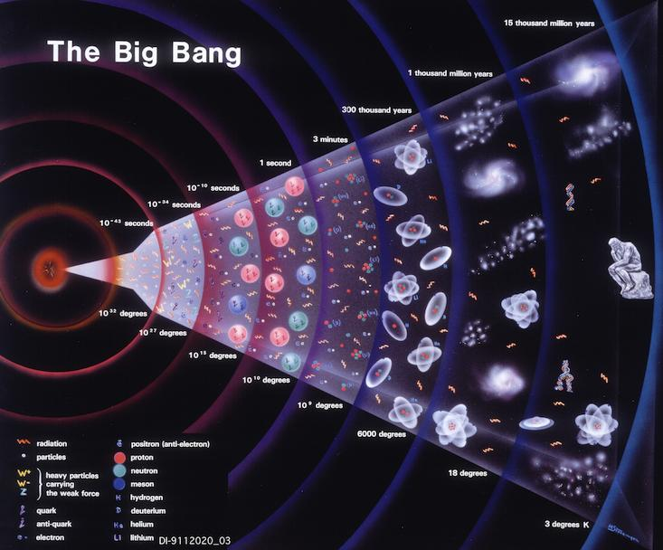

By Raghava Kalidindi
You have probably heard of the big bang, the giant explosion that the universe emerged from. However, that name isn't very accurate, since there would have been no sound at all. Sound can't travel through empty space. So what exactly was the big bang? And what does it tell us about our universe and our future within this universe?
Before our universe was created, there was nothing. Then, approximately 14.7 billion years ago, a singularity popped up. It then started expanding, exploding outwards. Along with the out burst of energy there came the Four Fundamental Forces and subatomic particles. Particularly the ones in the standard model of particle physics, the elementary particles that form our universe as we know it. This then gave rise to our universe as we know it, but we still don't know if we were the first. It is absolutely possible that there was a universe before us that experienced the cosmological Big Crunch, being crushed into a singularity by gravity, and then exploded outward to create our modern universe.

In order to accept that our universe was created, we have to be able to accept that something can, indeed, come from nothing. This is because the laws of thermodynamics do not apply outside the universe. This means that the law that says that energy can neither be created nor destroyed did not exist until the universe was formed. So before then, there would be utter chaos, from which we were born by pure chance. Another possibility is that there was a universe before us that experienced The Big Crunch. If you don't know what that is, check out my other site.
As soon as the Big Bang occurred, it was was too hot for anything to form. Approximately one second afterward, it became cool enough for the quarks to combine to become protons and neutrons. In about 3 minutes, all of the anti-matter would have been annihilated, and 20 minutes in, a few basin nuclei would have formed, such as hydrogen or helium. In about 300,000 years afterward, the universe would have been about as hot as the sun, and the electrons would have started attaching to the nuclei. 500 million years after the Big Bang, stars and galaxies would start to form. And finally, in about 9 billion years after the Big Bang many Solar Systems, including ours, would appear.
But why do we need to know all of this? Well, The expansion from the Big Bang is still continuing to this day and scientists predict that it could be responsible for our demise. So even if this event took place 14.7 billion years ago, it still affects us today. This means that learning more about the Big Bang would not just teach us about where we are from, but also where we are headed. And maybe, just maybe, whether or not we will be going alone, not just in this universe, but what in all of the billions of others that possibly exist.
Want to read again?